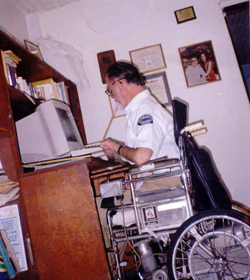
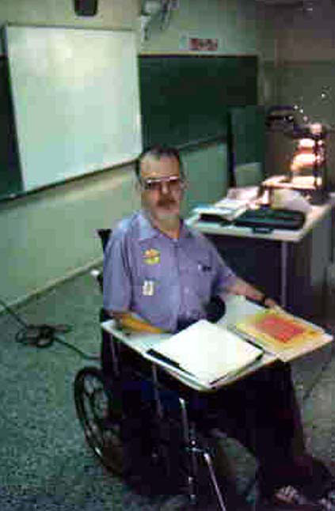

|
|  |
 |
| Working on the computer |
Teaching |
| Trabajando en la computadora |
Enseñando |
| This is how my dad spent the last three or so years of his life. He was working with a website that makes math problems for kids to solve. He worked on writing his autobiography (only the last year). He also wrote me one e-mail for everyday that I wasn't at home. He made it to 704. Thanks, pop, I'll miss those. The other photo shows him the 20 or so years before, teaching math at the American School. |
| Asi fue como mi paso los últimos tres años de su vida. El trabajó para una página web que hace problemas de matemáticas para niños. El escribió su autobiografía (solo el último año). El me mando un correo electronico por cada día que yo no estuve en la casa. Llegó hasta 704. Gracias, papi, los voy a extrañar. La otra foto muestra a mi papa los 20 años antes, que los pasó enseñando matemáticas en la Escuela Americana. |
|
|